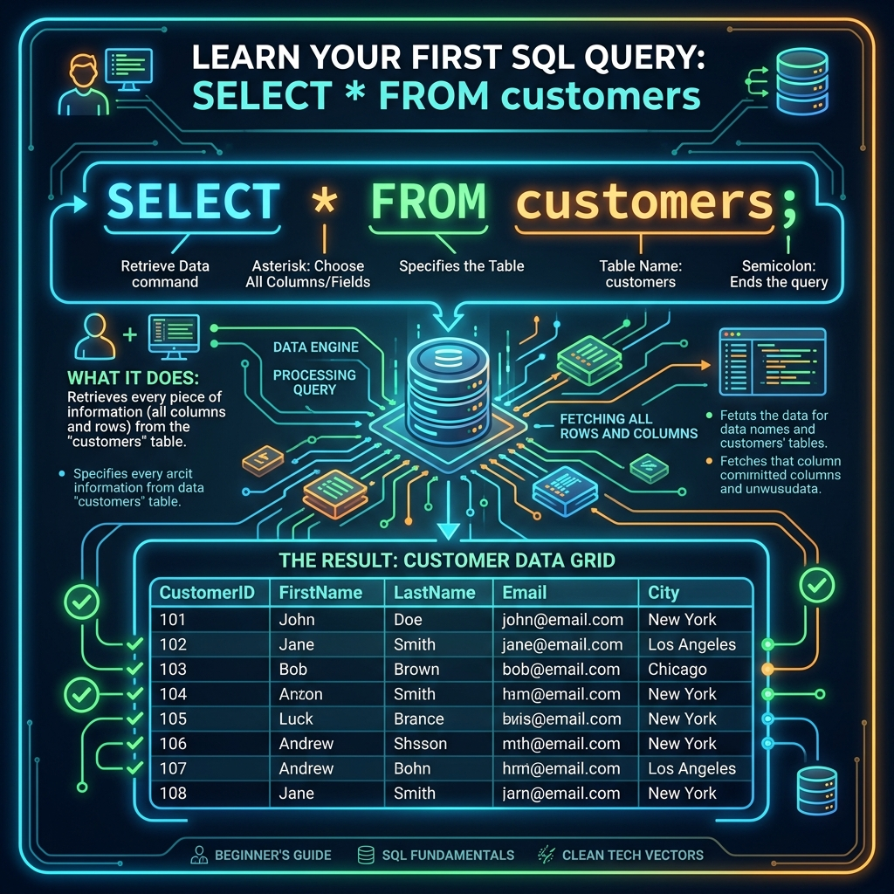

သင်ခန်းစာ ၅ — ပထမဆုံး Query များကို ရေးသားခြင်း

ဒေသင်ခန်းစာမာ မူလ Sample Database ကို အသုံးပြုပနာ ပထမဆုံး SQL Query များ ရေးသားပနာ Data ထုတ်ယူနည်းကို လေ့လာသွားပါဖို့။
ခန့်မှန်း ကြာချိန် - မိနစ် ၂၀
📥 အဆင့် ၁ - စမ်းသပ် Database ကို ထည့်သွင်းခြင်း
Command Line မှ ထည့်သွင်းနည်း:
mysql -u root -p < sample-database.sql
သို့မဟုတ် MySQL ထဲမာ ရောက်ရှိနေပါက -
SOURCE /path/to/sample-database.sql;
Workbench မှ ထည့်သွင်းနည်း:
- Workbench ကို ဖွင့်ပနာ Server နန့် ချိတ်ဆက်ပါ။
- File ➔ Open SQL Script မှတစ်ဆင့်
sample-database.sqlကို ရွေးချယ်ပါ။ - လျှပ်စီးကြောင်းပုံ (⚡) ခလုတ်ကို နှိပ်ပနာ Run ပါ။
🗄️ အဆင့် ၂ - အသုံးပြုမည့် Database ကို ရွေးချယ်ခြင်း
USE shop;
Database changed ဟု ပေါ်လာပါမည်။ ယခုအခါ ပြုလုပ်သမျှ Command အားလုံးစွာ shop Database ပေါ်မာ သက်ရောက်ပါဖို့။
📋 အဆင့် ၃ - ဟိနေသော Table စာရင်းများကို ကြည့်ရှုခြင်း
SHOW TABLES;
ရလဒ် ပေါ်လာပါမည် -
+----------------+
| Tables_in_shop |
+----------------+
| customers |
| order_items |
| orders |
| products |
+----------------+
🎨 အဆင့် ၄ - Table များ ချိတ်ဆက်နေပုံ visual (ER Diagram)
shop Database မာ Table (၄) ခု ပါဝင်ပါတယ် -
┌─────────────────┐ ┌─────────────────┐
│ customers │ │ products │
├─────────────────┤ ├─────────────────┤
│ id (PK) │ │ id (PK) │
│ first_name │ │ name │
│ last_name │ │ price │
│ email │ │ category │
└────────┬────────┘ └────────┬────────┘
│ │
│ customer_id (FK) │ product_id (FK)
▼ ▼
┌─────────────────┐ ┌─────────────────┐
│ orders │ │ order_items │
├─────────────────┤ ├─────────────────┤
│ id (PK) │◄──────│ order_id (FK) │
│ customer_id (FK)│ │ product_id (FK) │
│ order_date │ │ quantity │
│ total_amount │ │ unit_price │
└─────────────────┘ └─────────────────┘
PK = Primary Key (သီးသန့်ခွဲခြားသည့် ပင်မသေတ္တာသော့)
FK = Foreign Key (အခြား Table သို့ ချိတ်ဆက်ထားသော သော့)
- customers — ဝယ်သူများ၏ အချက်အလက်များ
- products — ရောင်းချသော ကုန်ပစ္စည်း စာရင်းများ
- orders — ဝယ်ယူခဲ့သော အော်ဒါ မှတ်တမ်းများ
- order_items — အော်ဒါတစ်ခုစီမာ ပါဝင်သော ပစ္စည်းအသေးစိတ်များ
🔍 အဆင့် ၅ - Table ၏ အဆောက်အအုံကို စစ်ဆေးခြင်း
DESCRIBE customers;
| Field | Type | Null | Key | Default | Extra |
|---|---|---|---|---|---|
| id | int | NO | PRI | NULL | auto_increment |
| first_name | varchar(50) | NO | NULL | ||
| last_name | varchar(50) | NO | NULL | ||
| varchar(100) | YES | UNI | NULL | ||
| city | varchar(50) | YES | NULL |
📐 အဆင့် ၆ - SQL Query ရေးသားပုံ အခြေခံ ပုံစံ
SELECT [မည်သည့် Column များကို ယူမည်နည်း]
FROM [မည်သည့် Table မှ ယူမည်နည်း]
LIMIT [မည်မျှ ကန့်သတ်မည်နည်း];
┌──────────┐ ┌──────────┐
│ SELECT │ ───────► │ Column │ (အမည်၊ စျေးနှုန်း စသည်)
└──────────┘ └──────────┘
│
▼
┌──────────┐ ┌──────────┐
│ FROM │ ───────► │ Table │ (products, customers စသည်)
└──────────┘ └──────────┘
⚡ အဆင့် ၇ - ပထမဆုံး Query — SELECT * (Data အားလုံး ထုတ်ကြည့်ခြင်း)
* သင်္ကေတမှာ "Column အားလုံး" ကို ညွှန်းပါသည်။
SELECT * FROM customers LIMIT 5;
ရလဒ် ပေါ်လာပါမည် -
| id | first_name | last_name | city | |
|---|---|---|---|---|
| 1 | U | Ba | uba@gmail.com | Yangon |
| 2 | Daw | Hla | hla@gmail.com | Mandalay |
| 3 | Ko | Aung | aung@gmail.com | Sittwe |
| 4 | Ma | Suu | suu@gmail.com | Taunggyi |
| 5 | U | Kyaw | kyaw@gmail.com | Pyin Oo Lwin |
LIMIT 5 ကို ဇာဖြစ်လို့ သုံးရလဲ?
Data တန်းပေါင်း ထောင်ချီ ဟိနေပါက အားလုံး ပေါ်လာလျှင် ကြည့်ရ ခက်ခဲပါဖို့။ ထို့ကြောင့် စတင် ကြည့်ရှုချိန်မာ LIMIT ကို အသုံးပြုပနာ အရေအတွက် ကန့်သတ်ကြည့်ရပါတယ်။
🎯 အဆင့် ၈ - သီးသန့် Column များကိုသာ ရွေးထုတ်ကြည့်ခြင်း
SELECT first_name, last_name, city FROM customers;
| first_name | last_name | city |
|---|---|---|
| U | Ba | Yangon |
| Daw | Hla | Mandalay |
| Ko | Aung | Sittwe |
⚠️ ကြုံတွေ့ရတတ်သော အမှားများနန့် ဖြေရှင်းနည်း
| ပြဿနာ error | အကြောင်းအရင်း | ဖြေရှင်းနည်း |
|---|---|---|
Unknown database 'shop' | sample-database.sql မထည့်ရသေးပါ | mysql -u root -p < sample-database.sql ကို ပြန် Run ပါ |
Syntax error | Semicolon မပါ သို့ စာလုံးပေါင်း မှားနိပါသည် | ; ပါမပါနန့် SELECT/FROM စာလုံးပေါင်း စစ်ပါ |
Table 'shop.customers' doesn't exist | Database ကို ရွေးမထားပါ | အလျင် USE shop; ကို Run ပါ |
📝 လေ့ကျင့်ခန်း (Exercise)
၁. Products Table ထဲဟိ ကုန်ပစ္စည်း အားလုံးကို ထုတ်ကြည့်ပါ - SELECT * FROM products;
၂. ကုန်ပစ္စည်း အမည်နန့် စျေးနှုန်းကိုသာ ထုတ်ကြည့်ပါ - SELECT name, price FROM products;
၃. Orders Table ထဲမှ ပထမဆုံး အော်ဒါ (၃) ခုကို ထုတ်ကြည့်ပါ - SELECT * FROM orders LIMIT 3;
➡️ နောက်ထပ် သွားရမည့် အဆင့်
ယခုအခါ ဒေတာများကို ကြည့်ရှုတတ်သွားပြီဖြစ်လို့ မိမိကိုယ်တိုင် Table များ စတင် ဖန်တီးနည်းကို ဆက်လက် လေ့လာကြပါစို့။